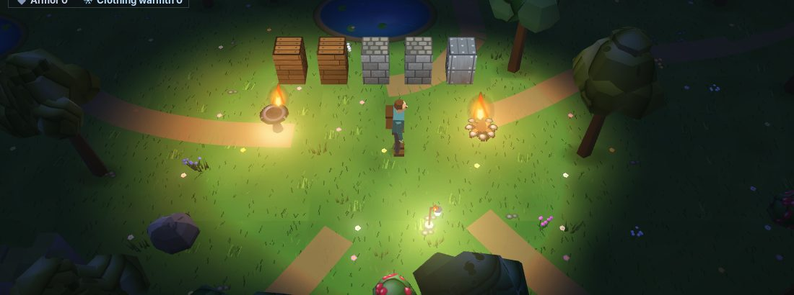
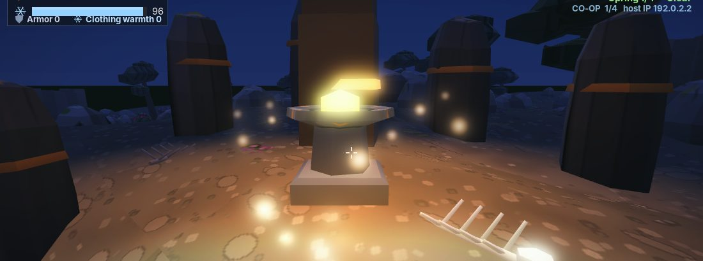
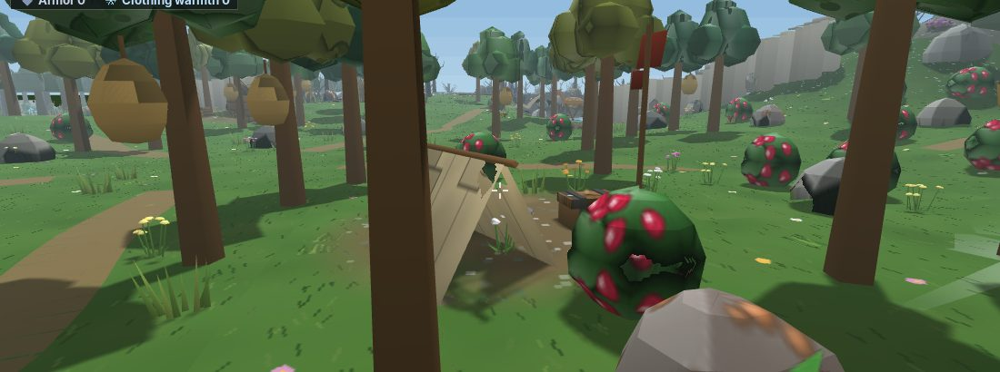
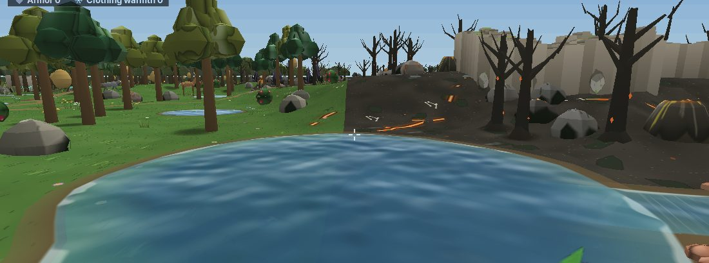
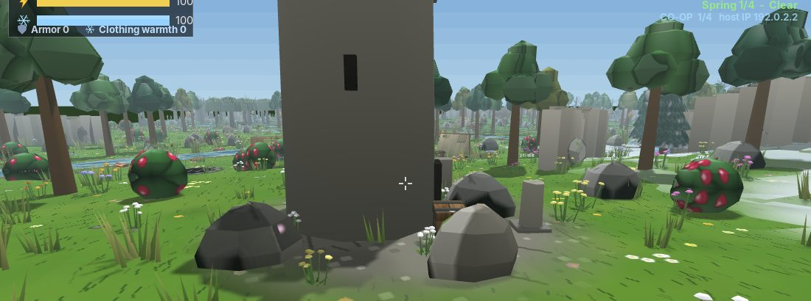

Gather by day. Build by dusk. Survive the night — together.
Chop trees, mine rocks and hunt by day. When the sun goes down the dead come for you, so build walls, light fires and hold out until dawn. Explore abandoned camps and ruins, learn new recipes, tame pets, and wake the bosses in their lairs when you dare. You will die a lot — and get a little better every time. Play alone, with friends on the same Wi-Fi, or split-screen on one computer.





You only do this once. No accounts, no git, nothing to pay for.
Last Light runs on Python. Get it from python.org and run the installer.
Get Python for WindowsClick Download Last Light. Find LastLight3D-main.zip in your Downloads, right-click it → Extract All… → Extract. You get a folder called LastLight3D-main — you can move it anywhere (Documents or your Desktop are fine).
It's inside the folder. The first time, it installs what the game needs (about a minute), then the game opens. From now on, this is how you start the game.
Last Light runs on Python. Get the macOS installer from python.org, open it and click through.
Get Python for MacClick Download Last Light. Your Mac unzips it into a folder called LastLight3D-main in Downloads (if you only see a .zip, double-click it). Move the folder anywhere you like — Documents is a good spot.
The first time only: right-click (or Control-click) Play Last Light (Mac) and choose Open, then Open again. It installs what the game needs (about a minute), then the game opens. After that, just double-click it.
New things get added all the time. You never need to download the game again: every time you start it with Play Last Light, it checks for a new version and asks if you want it. Press ENTER and you're up to date. Your saved games, settings and achievements are always kept.
It's in the bottom-right corner of the title screen. If a newer one is out, the title screen tells you too:
Then close the game, open Play Last Light again, and answer Y (or just press ENTER):
Playing together? Everyone should update before you play, so you're all on the same version.
Keyboard and mouse, or an Xbox controller. Press ESC in the game for the full list.
| Do this | Keyboard + mouse | Controller |
|---|---|---|
| Move / aim | WASD / mouse | Left stick / right stick |
| Sprint (uses energy) | Hold SHIFT while moving | Click the left stick |
| Rest | Hold SHIFT standing still | Hold X |
| Attack, chop, mine, hunt | Left click | A or RT |
| Build, eat, tame | Right click | LT |
| Backpack & crafting | TAB | Y |
| Use: storage, caves, chests, drink, boss altars | E | B |
| First person on / off | V | Click the right stick |
| Pause, help & save | ESC | Menu |
git pull?git pull — or let play.py do it: in a git copy it updates with
git pull instead of downloading. You can also run the game directly with python3 main.py
after pip3 install -r requirements.txt.